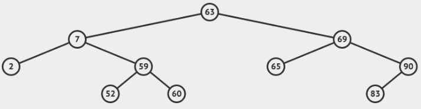
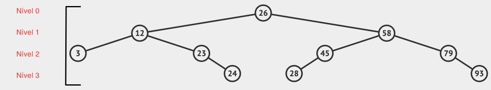
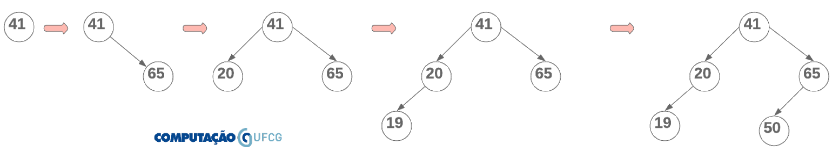
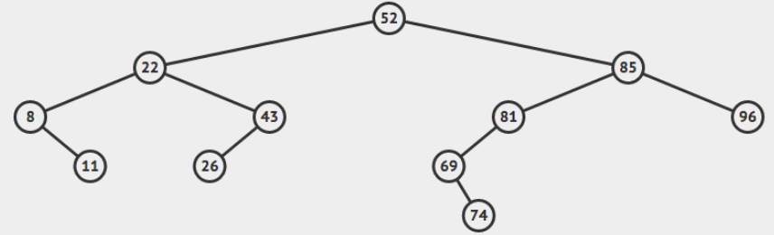

Árvores Binárias de Pesquisa
Definições e Propriedades
Árvores binárias são estruturas de dados fundamentais no contexto de Ciência da Computação. Em particular, Árvores Binárias de Pesquisa são aplicadas na solução de diversos problemas que demandam eficiência em operações básicas, como busca, inserção e remoção. Informalmente, uma Árvore Binária de Pesquisa (BST)1 é uma estrutura de dados de árvore binária baseada em nós, onde a subárvore à esquerda de cada nó possui valores numéricos inferiores ao nó e a subárvore à direita de cada nó possui valores numéricos superiores ao nó. Formalmente, uma BST é definida recursivamente da seguinte forma:
-
$A$ é uma árvore nula;
-
$A$ é uma tripla $(Esq, raiz, Dir)$, onde Esq e Dir são árvores binárias de pesquisa e Esq contém apenas valores menores do que o armazenado na raiz, enquanto Dir contém apenas valores maiores do que o armazenado na raiz.
A Figura abaixo2 ilustra uma árvore com raiz 63.

O nó
Árvores são baseadas em nós. Do ponto de vista de código, temos:
class Node {
int value;
Node left;
Node right;
Node parent;
Node(int v) {
this.value = v;
}
}
Em primeiro lugar, um nó pode armazenar qualquer objeto como valor. Neste material estamos utilizando um valor inteiro para simplificar.
Depois, as referências left e right são muito parecidas com as referências de um Node em Listas Duplamente Encadeadas, lembra? A única diferença aqui é que garantimos por construção que o nó para o qual a referência left aponta é null ou armazena um valor menor do que value, enquanto o nó para o qual a referência right aponta é null ou armazena um valor maior do que value. Essa restrição deve ser verdadeira para todo e qualquer nó da árvore.
Formalmente uma árvore é um grafo que não contém ciclos. Todavia, na prática, nós acrescentamos a referência parent que liga um nó ao seu pai. Ou seja, na prática não estamos falando de árvore, pois há um ciclo entre cada nó e seu pai. Nós vamos conviver com esse conflito porque essa referência facilita muito caminhar árvore acima, o que é preciso em alguns algoritmos, como sucessor e predecessor, que são utilizados na remoção de um elemento da árvore.
Raiz
Raiz é um nó especial da árvore. A partir dela conseguimos acessar qualquer nó da árvore. Assim como mantivemos uma referência para a o início de uma lista encadeada para poder acessar o restante dos elementos, na BST mantemos a referência para a raiz da árvore. A raiz da árvore ilustrada pela figura acima é 63.
Grau de um nó
O grau de um nó é a quantidade de filhos que ele possui. Naturalmente, só temos três graus possíveis em uma árvore binária de pesquisa: 0, 1 e 2. Os nós com grau zero são chamados de folhas. Na figura acima, as folhas são os nós 2, 52, 60, 65 e 83. Apenas o nó 90 tem grau 1, enquanto os nós 63, 7, 69 e 59 possuem grau 2. Os nós com graus 1 e 2 são chamados de nós internos.
Altura
A altura de uma árvore binária de pesquisa é o maior caminho entre a raiz e todas as folhas. Vamos analisar novamente a nossa árvore exemplo:
Para determinarmos a altura, precisamos calcular o tamanho dos caminhos entre a raiz e todas as folhas. Vamos lá:
- 63 -> 7 -> 2. Tamanho do caminho = 2.
- 63 -> 7 -> 59 -> 52. Tamanho do caminho = 3.
- 63 -> 7 -> 59 -> 60. Tamanho do caminho = 3.
- 63 -> 69 -> 65. Tamanho do caminho = 2.
- 63 -> 69 -> 90 -> 83. Tamanho do caminho = 3.
Como dito anteriormente, a altura da árvore é o maior caminho, ou seja, h=3.
A altura de uma árvore com apenas um nó é 0, enquanto a altura de uma árvore nula é -1.
Esse conceito é importante pois várias operações básicas, como inserção, busca e remoção em uma BST são, do ponto de vista assintótico, $O(h)$. Portanto, idealmente, é preciso manter $h$ com o menor valor possível para que as operações sejam eficientes. No entanto, isso nem sempre é possível. Uma combinação de inserções e remoções pode levar a árvore a um estado em que a altura da sub-árvore à direita pode ser muito maior que a altura da sub-árvore à esquerda (e vice-versa). Quando a árvore atinge esse estado, dizemos que ela está desbalanceada. De maneira geral, uma árvore balanceada é aquela que a altura é $O(\log n)$.
A altura da árvore é a altura de sua raiz. Contudo, o conceito de altura pode ser atribuído a qualquer nó. Basta considerá-lo como sendo a raiz das sub-árvores que estão abaixo dele. Por exemplo, vamos determinar a altura do nó 69.
- 69 -> 65. Tamanho do caminho = 1.
- 69 -> 90 -> 83. Tamanho do caminho = 2.
Portanto, a altura do nó 69 é 2, pois o maior caminho entre ele e as folhas de suas subárvores é 2.
Vale a pena fazermos um quiz para ver se você de fato entendeu o conceito de altura.
Nível
Há também o conceito de níveis em uma BST. O nível da raiz é o 0, o nível dos filhos diretos da raiz é o nível 1, e assim por diante. A Figura abaixo ilustra esse conceito. É muito importante não confundir nível com altura. A altura da raiz nessa árvore, por exemplo, é 3 e ela está no nível 0. A altura do nó 58 é 2, e ele está no nível 1. Os nós que estão no mesmo nível não necessariamente possuem alturas iguais.

Árvore Completa
Uma árvore completa é aquela que todos os nós, exceto folhas, possuem grau 2 e as folhas estão no mesmo nível. Veja o exemplo abaixo:

Importante aqui notar que a árvore contém 15 nós e altura 3. De maneira geral, não é difícil perceber que o número máximo de nós em uma árvore binária de altura $h$ é $2^{h+1} - 1$.
Também é importante destacar que uma árvore completa possui a menor altura possível para a sua quantidade de nós. Essa altura é $h = \log (n+1)-1$, ou seja, $O(\log n)$. Isso faz com que os principais algoritmos sejam O(log n), pois são dependentes da altura.
Sucessor
O sucessor de um elemento na árvore é o menor valor maior do que ele. Complicado? Imagine se pudéssemos imprimir a sequência dos valores presentes na árvore de forma ordenada. O sucessor de um elemento, seria o elemento imediatamente à frente. Por exemplo, o sucessor de 41 na árvore acima é 45. O sucessor de 15 é 20. O sucessor de 72 é 91. Naturalmente, o maior valor armazenado na árvore (99) não tem sucessor.
Predecessor
O predecessor de um elemento na árvore é o maior valor menor do que ele. Complicado? Imagine se pudéssemos imprimir a sequência dos valores presentes na árvore de forma ordenada. O predecessor de um elemento, seria o elemento imediatamente antes na sequência. Por exemplo, o predecessor de 41 na árvore acima é 32. O predecessor de 15 é 11. O predecessor de 72 é 65. Naturalmente, o menor valor armazenado na árvore (1) não tem predecessor.
Implementação
Assim como LinkedList, a classe BST é nada mais do que um controlador das referências para os nós, mantendo apenas a referência para a raiz da árvore. Vamos ver como isso é feito em Java:
public class BST {
private Node root;
public boolean isEmpty() {
return this.root == null;
}
...
}
class Node {
int value;
Node left;
Node right;
Node parent;
Node(int v) {
this.value = v;
}
}
Operações Básicas e outros algoritmos
Inserção
Primeiro, vamos ilustrar como se adiciona elementos em uma árvore binária de pesquisa. Somente depois nos preocupamos com o código, ok?
Suponha que os seguintes elementos devem ser adicionados em uma árvore binária de pesquisa nessa ordem: 41, 65, 20, 19 e 50. Inicialmente temos a árvore vazia. Nesse caso, 41 assume o papel da raiz.

Depois disso, 65 é adicionado à direita de 41, pois é um valor maior. 20 é adicionado à esquerda de 41, por ser menor do que esse valor. Depois 19 é comparado com 41, por ser menor, a adição deve ser feita à esquerda. Contudo, já há o elemento 20 à esquerda. Então compara-se 19 com 20. Como 19 é menor e não há nenhum nó à esquerda de 20, 19 assume essa posição. A última adição é a do valor 50. Inicialmente é comparado com a raiz e a inserção deve ser feita à direita. Então compara-se 50 com 65. Por ser menor e não haver nó à esquerda de 65, 50 assume essa posição.
Note que todo novo nó é adicionado como folha na árvore.
Complicado? Eu gravei um vídeo para facilitar.
Implementação. Podemos implementar a adição de maneira iterativa e recursiva. Vamos analisar primeiro a adição iterativa.
public void add(int element) {
if (isEmpty())
this.root = new Node(element);
else {
Node aux = this.root;
while (aux != null) {
if (element < aux.value) {
if (aux.left == null) {
Node newNode = new Node(element);
aux.left = newNode;
newNode.parent = aux;
return;
}
aux = aux.left;
} else {
if (aux.right == null) {
Node newNode = new Node(element);
aux.right = newNode;
newNode.parent = aux;
return;
}
aux = aux.right;
}
}
}
}
A primeira verificação é feita para saber se a árvore é vazia. Se sim, basta fazermos a raiz apontar para o novo nó this.root = new Node(element).
Caso não seja a primeira adição precisamos seguir o passo a passo ilustrado anteriormente. Ou seja, caminhar árvore abaixo fazendo a comparação do elemento adicionado com os nós no caminho. Se o elemento for menor, caminhamos para a esquerda (aux = aux.left). Se for maior, caminhamos para a direita (aux = aux.right).
A adição é feita quando aux.left == null, se o elemento for menor ou aux.right == null, se o elemento for maior. Note que o trecho liga não somente o pai ao novo nó, mas também liga o novo nó ao pai (newNode.parent = aux).
Agora vamos nos debruçar sobre a implementação recursiva.
...
public void recursiveAdd(int element) {
if (isEmpty())
this.root = new Node(element);
else {
recursiveAdd(this.root, element);
}
}
private void recursiveAdd(Node node, int element) {
if (element < node.value) {
if (node.left == null) {
Node newNode = new Node(element);
node.left = newNode;
newNode.parent = node;
return;
}
recursiveAdd(node.left, element);
} else {
if (node.right == null) {
Node newNode = new Node(element);
node.right = newNode;
newNode.parent = node;
return;
}
recursiveAdd(node.right, element);
}
}
...
Usamos dois métodos para implementar a recursão. O primeiro, público, tem a assinatura padrão que recebe o valor a ser adicionado. Esse método verifica se a árvore é nula e, se for, faz com que a referência root aponte para o novo nó (this.root = new Node(element)).
O outro método também recebe como parâmetro o elemento adicionado, além de receber o nó atualmente sendo analisado. Inicialmente o primeiro nó passado é a raiz.
As verificações e condições de parada são as mesmas da versão iterativa:
-
se o elemento é menor e a esquerda é nula, adiciona-se o elemento à esquerda do nó atual e faz-se a ligação para o nó pai. Se o elemento é menor e a esquerda não é nula, chama-se recursivamente o método add passando como parâmetro o nó à esquerda;
-
se o elemento é maior e a direita é nula, adiciona-se o elemento à direita do nó atual e faz-se a ligação para o nó pai. Se o elemento é maior e a direita não é nula, chama-se recursivamente o método add passando como parâmetro o nó à direita.
Em ambas as estratégias o novo elemento é adicionado como folha. Portanto, no pior caso, a adição tem tempo de execução dado por $O(h)$, pois $h$ é o maior caminho entre a raiz e todas as folhas.
Busca
A busca em uma árvore binária de pesquisa também usa as propriedades de ordenação dos nós para decidir que caminho percorrer. Compara-se o elemento com a raiz. Se for maior, a busca deve seguir pela sub-árvore à direita (aux = aux.right). Caso contrário, deve seguir pela sub-árvore à esquerda (aux = aux.left). Esse mesmo processo é feito com a raiz dessas sub-árvores. O algoritmo pára se o elemento for encontrado (aux.value == element) ou se alcançar uma folha e não encontrar o elemento (aux == null).
Veja abaixo a versão iterativa da busca binária.
...
public Node search(int element) {
Node aux = this.root;
while (aux != null) {
if (aux.value == element) return aux;
if (element < aux.value) aux = aux.left;
if (element > aux.value) aux = aux.right;
}
return null;
}
...
A versão recursiva da busca binária também utiliza dois métodos. O método público seguindo a assinatura padrão e um privado auxiliar para controlar a recursão.
...
public Node recursiveSearch(int element) {
return recursiveSearch(this.root, element);
}
private Node recursiveSearch(Node node, int element) {
if (node == null) return null;
if (element == node.value) return node;
if (element < node.value) return recursiveSearch(node.left, element);
else return recursiveSearch(node.right, element);
}
...
A ideia é a mesma. Compara-se o elemento com o nó atual. Se for menor, há uma chamada recursiva para a sub-árvore à esquerda (recursiveSearch(node.left, element)). Se for maior, há uma chamada recursiva para a direita (recursiveSearch(node.right, element)). O algoritmo pára o nó sob análise for nulo.
A busca binária tem seu tempo de execução dependente da altura da árvore, pois no pior caso o algoritmo percorre um ramo da árvore até o final e esse ramo tem altura $h$. Assim, a busca binária é $O(h)$.
Mínimo e Máximo
Mínimo é o menor valor presente na árvore, enquanto máximo é o maior. Para encontrar o mínimo, basta caminharmos na árvore para a esquerda até que não haja mais nós. O último nó visitado é o mínimo. De maneira análoga, o máximo é o último elemento mais à direita na árvore. Abaixo estão as implementações desses métodos. O mínimo é implementado de maneira recursiva, enquanto o máximo de maneira iterativa.
...
public Node min() {
if (isEmpty()) return null;
return min(this.root);
}
private Node min(Node node) {
if (node.left == null) return node;
else return min(node.left);
}
public Node max() {
if (isEmpty()) return null;
Node node = this.root;
while(node.right != null)
node = node.right;
return node;
}
...
Sucessor
Se um nó possui sub-árvore à direita, o seu sucessor é o mínimo dessa sub-árvore. Vamos a um exemplo:
Qual é o sucessor de 20? Se há sub-árvore à direita, basta retornamos o mínimo dessa sub-árvore. Ou seja, 27.
E se não houver sub-árvore à direita? Por exemplo, qual é o sucessor de 55? Como não há sub-árvore à direita, precisamos subir na árvore até encontrar um elemento maior do que 55. Primeiro comparamos com 50. Como 50 é menor, subimos para 65, sendo 65 maior que 55, a busca é finalizada. Encontramos o sucessor de 55, pois é o primeiro elemento árvore acima maior do que ele.
Você não precisa decorar isso, certo? Faz todo sentido procurar pelo mínimo da sub-árvore à direita, pois é lá que estão os valores maiores que o nó. O mínimo deles é o sucessor. E se não houver sub-árvore à direita, é natural que o sucessor esteja árvore acima, pois à esquerda todos os valores são menores. Então o algoritmo verifica árvore acima o primeiro elemento maior que o nó sob análise.
public Node sucessor(Node node) {
if (node == null) return null;
if (node.right != null)
return min(node.right);
else {
Node aux = node.parent;
while (aux != null && aux.value < node.value)
aux = aux.parent;
return aux;
}
}
O método recebe o nó para o qual deseja se encontrar o sucessor. Se esse nó for nulo, o método retorna nulo. Caso contrário, verifica-se se há sub-árvore à direita (node.right != null). Se houver, retorna-se o mínimo dessa sub-árvore.
Caso não haja sub-árvore à direita, caminhamos árvore acima (aux = aux.parent) até encontrarmos um elemento maior ou subirmos toda a árvore e não encontrarmos (aux == null).
Predecessor
A identificação do predecessor é muito semelhante ao sucessor. Se um nó possui sub-árvore à esquerda, o seu predecessor é o máximo dessa sub-árvore. Vamos a um exemplo:
Qual é o predecessor de 20? Se há sub-árvore à esquerda, basta retornamos o máximo dessa sub-árvore. Ou seja, 15.
E se não houver sub-árvore à esquerda? Por exemplo, qual é o predecessor de 27? Como não há sub-árvore à esquerda, precisamos subir na árvore até encontrar um elemento menor do que 27. Primeiro comparamos com 29. Como 29 é maior, subimos para 20, sendo 20 menor que 27, a busca é finalizada. Encontramos o predecessor de 27, pois é o primeiro elemento árvore acima menor do que ele.
Você não precisa decorar isso, certo? Faz todo sentido procurar pelo máximo da sub-árvore à esquerda, pois é lá que estão os valores menores que o nó. O máximo deles é o predecessor. E se não houver sub-árvore à esquerda, é natural que o predecessor esteja árvore acima, pois à direita todos os valores são maiores. Então o algoritmo verifica árvore acima o primeiro elemento menor que o nó sob análise.
public Node predecessor(Node node) {
if (node == null) return null;
if (node.left != null)
return max(node.left);
else {
Node aux = node.parent;
while (aux != null && aux.value > node.value)
aux = aux.parent;
return aux;
}
}
Altura
Como dito anteriormente, a altura é o maior caminho entre a raiz e todas as folhas. A implementação é bem simples. Basta somar 1 cada vez que um novo nó é visitado e calcular de maneira recursiva o máximo entre a altura da sub-árvore à esquerda e da sub-árvore à direita. Lembrando que a altura de uma árvore cuja raiz é nula é -1.
...
public int height() {
return height(this.root);
}
private int height(Node node) {
if(node == null) return -1;
else return 1 + Math.max(height(node.left), height(node.right));
}
...
Remoção
Talvez a operação básica mais complexa de se implementar em BST seja a remoção. Mas nada que a gente não consiga decompor o problema em problemas menores e implementar :)
Vamos lá. A remoção em uma árvore binária de pesquisa possui três casos a serem analisados.
Caso 1
O nó a ser removido é uma folha. Nesse caso, basta fazermos com que o pai do nó, se existir, passe a apontar a sua direita ou a esquerda para null. Note que você precisa saber se a folha a ser removida é filha à direita ou à esquerda do nó pai. Essa verificação é feita através da comparação dos valores entre a folha e o nó pai. Se a folha for menor, ela está à esquerda do nó pai. Então você terá que fazer toRemove.parent.left = null. Do contrário, ela está à direita do nó pai. Nesse caso, você teria que fazer toRemove.parent.right = null.
Precisamos também verificar se o nó removido é raiz. Se for, simplesmente fazemos a raiz apontar para null.
...
if (toRemove.isLeaf()) {
if (toRemove == this.root)
this.root = null;
else {
if (toRemove.value < toRemove.parent.value)
toRemove.parent.left = null;
else
toRemove.parent.right = null;
}
...
Caso 2
O nó a ser removido possui apenas um filho. Ou seja, tem grau 1. Se o nó possuir apenas um filho, precisamos ligar esse filho ao pai do nó a ser removido (avô). Naturalmente, precisamos diferenciar se o único filho é à esquerda ou à direita. Além disso, precisamos verificar se o nó removido é a raiz da árvore.
...
} else if (toRemove.hasOnlyLeftChild()) {
if (toRemove == this.root) {
this.root = toRemove.left;
this.root.parent = null;
} else {
toRemove.left.parent = toRemove.parent;
if (toRemove.value < toRemove.parent.value)
toRemove.parent.left = toRemove.left;
else
toRemove.parent.right = toRemove.left;
}
} else if (toRemove.hasOnlyRightChild()) {
if (toRemove == this.root) {
this.root = toRemove.right;
this.root.parent = null;
} else {
toRemove.right.parent = toRemove.parent;
if (toRemove.value < toRemove.parent.value)
toRemove.parent.left = toRemove.right;
else
toRemove.parent.right = toRemove.right;
}
...
Caso 3
O nó a ser removido possui dois filhos. Ou seja, grau 2. Nesse caso, trocamos o valor do nó a ser removido com o valor do seu sucessor e chamamos recursivamente o método remove passando o nó sucessor. Veja a ilustração abaixo, copiada deste post do site CodeGuru.

E por que trocamos pelo sucessor? Para garantirmos que a restrição de “ordenação” entre os nós se mantenha. Se eu trocar um valor pelo seu sucessor, eu garanto que toda a sub-árvore à esquerda continua menor do que o valor e toda a sub-árvore à direita continua maior do que o valor. Isso acontece porque o sucessor é o mínimo valor à direita.
Outro fator importante é o fato de que o sucessor certamente será uma folha ou terá apenas um filho, uma vez que ele é o mínimo da sub-árvore à direita. Isso garante que na chamada recursiva, a remoção caia no Caso 1 ou Caso 2 sempre, encerrando o algoritmo.
...
} else {
Node sucessor = sucessor(toRemove);
toRemove.value = sucessor.value;
remove(sucessor);
}
...
Algumas perguntas recorrentes que surgem em sala de aula são:
O algoritmo é recursivo e não há condição de parada? Há sim. A gente garante que o algoritmo vai parar porque o sucessor de um nó tem no máximo 1 filho. Ou seja, depois da chamada recursiva, o algoritmo vai cair no caso 1 ou 2, que são “terminais”.
E se não tiver sucessor? Bom, se não tiver sucessor, ele certamente é o máximo da árvore. Ou seja, cai no Caso 1 ou 2, nunca no 3.
Posso usar o predecessor ao invés do sucessor? Pode sim. Só é importante deixar isso explícito no contrato, porque a ávore que usa o sucessor na remoção fica diferente da árvore que usa o predecessor.
Percorrendo Árvores Binárias
De maneira geral, há duas estratégias para percorrer um grafo: em profundidade (depth-first search) e em largura (breadth-first search). Essas estratégias são utilizadas em diversos algoritmos fundamentais em Ciência da Computação. Por exemplo, o algoritmo de Dijkstra, que calcula o menor caminho entre qualquer par de vértices em um grafo, segue a estratégia em profundidade. A busca em largura também é um algoritmo bastante utilizado em redes sociais. Dado um grafo onde os vértices são pessoas e as arestas representam uma conexão entre elas, é possível utilizar busca em largura para identificar as pessoas a uma distância k de uma determinada pessoa.
Ambas as estratégias têm como objetivo percorrer o grafo. O que as difere é a decisão de qual nó visitar primeiro quando houver mais de uma possibilidade. Trocando em miúdos, a diferença é a ordem de visitação dos nós.
Em Profundidade
A ideia é escolher um nó de partida e explorar todo o ramo da árvore antes de voltar e visitar os outros ramos. Vamos adotar essa estratégia para percorrer a árvore abaixo:

O mantra é: para cada nó visitado explore o máximo à esquerda deste nó e depois o máximo à direita.
Inicialmente escolhemos como ponto de partida a raiz. No nosso caso, visitar significa que vamos imprimir o nó, ok? Então o primeiro nó impresso é 52.
Depois disso, vamos explorar o ramo o máximo à esquerda. Então decidimos ir para 22. Novamente, explorando o máximo à esquerda, o próximo nó a ser visitado é o 8. Até aqui temos a seguinte impressão: 52 -> 22 -> 8.
Neste ponto já exploramos o máximo da esquerda de 8, agora vamos para a direita. Então imprimimos o valor 11. Até aqui temos: 52 -> 22 -> 8 -> 11.
Como não há mais direita nem esquerda a ser explorada de 8, subimos para 22. A esquerda de 22 já foi toda explorada, então vamos para a direita. Visitamos 43. Lembre-se, para cada nó eu tenho que visitar toda a esquerda e depois a direita. Então vamos para a esquerda de 43, que é 26. O resultado parcial até aqui é: 52 -> 22 -> 8 -> 11 -> 43 -> 26.
Voltamos para 52 e exploramos a direita, isto é 85. Imprimimos 85 e vamos o máximo para a esquerda. O resultado parcial é então: 52 -> 22 -> 8 -> 11 -> 43 -> 26 -> 85 -> 81 -> 69.
Exploramos toda a esquerda de 69. Agora vamos para a direita. 74. Depois subimos e vamos para a direita de 81, que não existe e, por isso, não imprimimos nada. Por fim subimos até 85 e visitamos a sua direita (96).
O resultado final desse percurso em profundidade é: 52 -> 22 -> 8 -> 11 -> 43 -> 26 -> 85 -> 81 -> 69 -> 74 -> 96.
Essa é uma das estratégias de percorrer uma árvore em profundidade. Lembra que escolhemos explorar o nó, sua esquerda e depois a sua direita? Essa escolha tem um nome particular percurso em pré-ordem.
...
public void preOrder() {
preOrder(this.root);
}
private void preOrder(Node node) {
if (node != null) {
System.out.println(node.value);
preOrder(node.left);
preOrder(node.right);
}
}
...
Há outras duas escolhas clássicas: em-ordem e pós-ordem.
Em-ordem: esquerda, nó, direita. Neste tipo de percurso em profundidade, primeiro visitamos toda a esquerda de um nó, depois visitamos o nó e só depois a sua direita. Retomando nosso exemplo:
Para a árvore acima, temos como resultado o seguinte percurso: 8 -> 11 -> 22 -> 26 -> 43 -> 52 -> 69 -> 74 -> 81 -> 85 -> 96. Note que o resultado do caminho em-ordem em uma árvore binária de pesquisa é sempre uma sequência ordenada.
Como isso foi feito? Aplicando o mantra “esquerda, nó, direita” para cada nó visitado. Inicialmente escolhemos a raíz. Note que só vamos imprimir a raiz depois de visitar todos os nós à sua esquerda. Isso é verdade para cada nó visitado. Por isso, caminhamos o máximo à esquerda e o primeiro elemento a ser impresso é 8. Depois disso 11, 22, 26, 43…
...
public void inOrder() {
inOrder(this.root);
}
private void inOrder(Node node) {
if (node != null) {
inOrder(node.left);
System.out.println(node.value);
inOrder(node.right);
}
}
...
Pós-ordem: esquerda, direita, nó. Neste tipo de percurso em profundidade, primeiro visitamos toda a esquerda de um nó, depois visitamos toda a direita e só depois visitamos o nó. Retomando nosso exemplo:
Para a árvore acima, temos como resultado o seguinte percurso: 11 -> 8 -> 26 -> 43 -> 22 -> 74 -> 69 -> 81 -> 96 -> 85 -> 52. Note que o resultado do caminho pós-ordem em uma árvore binária de pesquisa sempre tem a raíz como último elemento.
Como isso foi feito? Aplicando o mantra “esquerda, direita, nó” para cada nó visitado. Inicialmente escolhemos a raíz. Note que só vamos imprimir a raiz depois de visitar todos os nós à sua esquerda e todos os nós à sua direita. Isso é verdade para cada nó visitado. Por isso, caminhamos o máximo à esquerda e depois o máximo à direita. O primeiro elemento a ser impresso é 11. Depois disso 8, 26, 43, 22…
...
public void posOrder() {
posOrder(this.root);
}
private void posOrder(Node node) {
if (node != null) {
posOrder(node.left);
posOrder(node.right);
System.out.println(node.value);
}
}
...
Em Largura
O percurso em largura explora inicialmente todos os filhos de um nó primeiro antes de descer na árvore. Profundidade desce e depois volta. Largura vai descendo “varrendo” todos os nós no caminho.
Para essa árvore, o resultado do percurso é 52 -> 22 -> 85 -> 8 -> 43 -> 81 -> 96 -> 11 -> 26 -> 69 -> 74.
Como isso é feito? Para cada nó visitado, exploramos todos os seus filhos antes de seguir adiante. Começamos em 52 e, portanto visitamos 22 e 85. Depois vamos para 22, visitando 8 e 43. Depois 85, visitando 81 e 96 e assim por diante. Veja que esse percurso visita todo o primeiro nível da árvore, depois todos o segundo nível, depois todo o terceiro e assim por diante.
E como isso é feito? Usamos uma fila para nos auxiliar. O algoritmo é o seguinte.
Inicia-se a fila com a raiz:
Q = {52}
Enquanto a fila não estiver vazia, retira-se o primeiro elemento da fila e coloca o seu filho à esquerda e o seu filho à direita na fila. Então retiramos (e imprimimos) 52 da fila e colocamos 22 e 85.
Impresso: 52
Q = {52, 22, 85}
A fila está vazia? Não, então retira o primeiro elemento dela e coloca sua esquerda e sua direita na fila. Isto é, tiramos 22 e colocamos 8 e 43.
Impresso: 52, 22
Q = {52, 22, 85, 8, 43}
A fila está vazia? Não, então retira o primeiro elemento dela e coloca sua esquerda e sua direita na fila. Isto é, tiramos 85 e colocamos 81 e 96.
Impresso: 52, 22, 85
Q = {52, 22, 85, 8, 43, 81, 96}
A fila está vazia? Não, então retira o primeiro elemento dela e coloca sua esquerda e sua direita na fila. Isto é, tiramos 8 e colocamos apenas 11, pois 8 não possui sub-árvore à esquerda.
Impresso: 52, 22, 85, 8
Q = {52, 22, 85, 8, 43, 81, 96, 11}
A fila está vazia? Não, então retira o primeiro elemento dela e coloca sua esquerda e sua direita na fila. Isto é, tiramos 43 e colocamos apenas 26, pois 43 não possui sub-árvore à direita.
Impresso: 52, 22, 85, 8, 43
Q = {52, 22, 85, 8, 43, 81, 96, 11, 26}
A fila está vazia? Não, então retira o primeiro elemento dela e coloca sua esquerda e sua direita na fila. Tiramos 81 e colocamos apenas a sua esquerda (69), pois a direita é nula.
Impresso: 52, 22, 85, 8, 43, 81
Q = {52, 22, 85, 8, 43, 81, 96, 11, 26, 69}
A fila está vazia? Não, então retira o primeiro elemento dela e coloca sua esquerda e sua direita na fila. Tiramos 96, mas não colocamos elemento algum porque 96 é folha.
Impresso: 52, 22, 85, 8, 43, 81
Q = {52, 22, 85, 8, 43, 81, 96, 11, 26, 69}
A fila está vazia? Não, então retira o primeiro elemento dela e coloca sua esquerda e sua direita na fila. Tiramos 11, mas não colocamos elemento algum porque 11 é folha.
Impresso: 52, 22, 85, 8, 43, 81, 96, 11
Q = {52, 22, 85, 8, 43, 81, 96, 11, 26, 69}
A fila está vazia? Não, então retira o primeiro elemento dela e coloca sua esquerda e sua direita na fila. Tiramos 26, mas não colocamos elemento algum porque 26 é folha.
Impresso: 52, 22, 85, 8, 43, 81, 96, 11, 26
Q = {52, 22, 85, 8, 43, 81, 96, 11, 26, 69}
A fila está vazia? Não, então retira o primeiro elemento dela e coloca sua esquerda e sua direita na fila. Tiramos 69 e colocamos apenas o 74, pois 69 não tem sub-árvore à esquerda.
Impresso: 52, 22, 85, 8, 43, 81, 96, 11, 26, 69
Q = {52, 22, 85, 8, 43, 81, 96, 11, 26, 69, 74}
A fila está vazia? Não, então retira o primeiro elemento dela e coloca sua esquerda e sua direita na fila. Tiramos 74 e não colocamos elemento algum porque 74 é folha.
Impresso: 52, 22, 85, 8, 43, 81, 96, 11, 26, 69, 74
Q = {52, 22, 85, 8, 43, 81, 96, 11, 26, 69, 74}
A fila está vazia? Está! Finalmente :). Veja que a sequência impressa representa o caminho por níveis na árvore da esquerda para a direita.
Percurso em largura: 52, 22, 85, 8, 43, 81, 96, 11, 26, 69, 74.
Implementação em Java.
...
public void printBFS() {
Deque<Node> queue = new LinkedList<Node>();
if (!isEmpty()) {
queue.addLast(this.root);
while (!queue.isEmpty()) {
Node current = queue.removeFirst();
System.out.println(current);
if(current.left != null)
queue.addLast(current.left);
if(current.right != null)
queue.addLast(current.right);
}
}
}
...